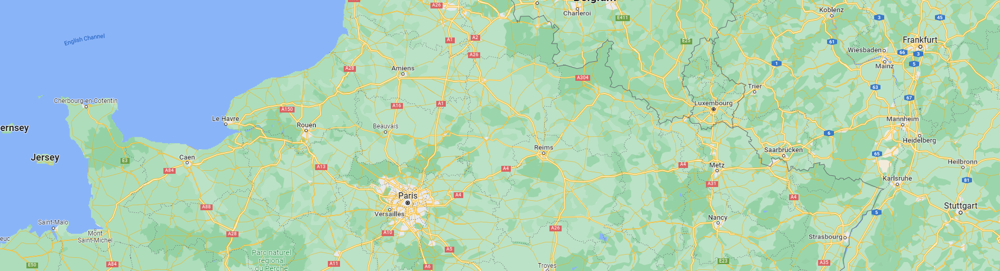

<navbar></navbar>
<!-- search for destination -->

<br><br><br>

<date-picker></date-picker>


<!-- populates destination -->
<div class="container-col-12">
    
</div> 

<!-- shows the results/quiz Hide/replace sections as you go -->
<!-- <section class="bottom">
    <p>Hello i should be bottom</p>
</section>
</div>
</div> -->